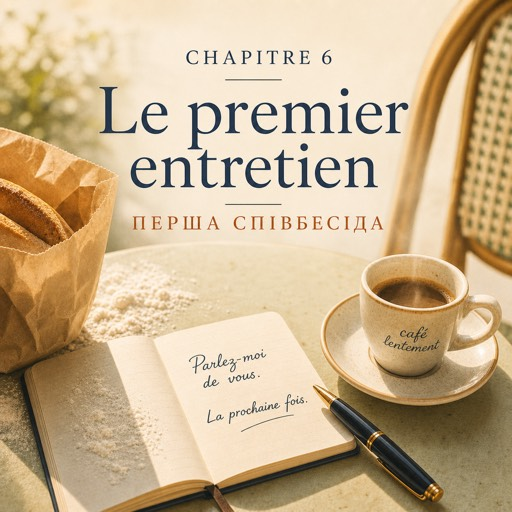

0:00
2:31
Натисніть речення, щоб почути його окремо.
Щоб слухати з підсвіткою — відкрийте сторінку в браузері.
Le mardi 9 septembre — вівторок, 9 вересня
La boulangerie est rue Oberkampf. Il est neuf heures et ça sent le pain chaud.
Булочна на вулиці Оберкампф. Дев'ята ранку, і пахне гарячим хлібом.
Natalia sait déjà qu'elle va se souvenir de cette odeur toute sa vie.
Наталя вже знає, що запам'ятає цей запах на все життя.
Le patron a cinquante ans, de la farine sur les mains et un vrai sourire.
Господареві п'ятдесят, у нього борошно на руках і справжня усмішка.
— Bonjour ! Vous êtes madame Kovalenko ? Asseyez-vous.
— Добрий день! Ви пані Коваленко? Сідайте.
C'est son premier entretien en français. Elle respire. D'abord, tu respires.
Це її перша співбесіда французькою. Вона вдихає. Спершу дихай.
— Alors. Vous cherchez un travail ?
— Отже. Ви шукаєте роботу?
— Oui. Je cherche un travail.
— Так. Я шукаю роботу.
— Vous avez de l'expérience ?
— У вас є досвід?
— J'ai travaillé quatre ans dans la logistique.
— Я чотири роки працювала в логістиці.
— Et vous êtes disponible quand ?
— А коли ви можете почати?
— Je suis disponible tout de suite.
— Я можу почати одразу.
Il fait oui de la tête. Ça marche. Trois questions, trois réponses.
Він киває. Виходить. Три питання, три відповіді.
Puis il pose ses mains sur la table.
Потім він кладе руки на стіл.
— Bon. Parlez-moi de vous.
— Добре. Розкажіть про себе.
Une seconde. Deux. Trois. Quatre.
Секунда. Дві. Три. Чотири.
Elle connaît ces mots. Parlez. Moi. De. Vous. Elle les connaît tous.
Вона знає ці слова. Роз-ка-жіть. Про. Себе. Вона знає їх усі.
Mais entre les mots et sa bouche, il n'y a plus rien.
Але між словами і її ротом більше немає нічого.
« J'ai oublié tous les mots », pense-t-elle.
«Я забула всі слова», — думає вона.
— Je... j'ai trente ans. Je suis... Pardon.
— Я… мені тридцять років. Я… Вибачте.
— Prenez votre temps.
— Не поспішайте.
— Mes qualités... Je suis organisée. Et rapide. Et...
— Мої якості… Я організована. І швидка. І…
Elle s'arrête.
Вона замовкає.
Le patron attend encore un peu. Puis il sourit gentiment, et c'est pire.
Господар чекає ще трохи. Потім усміхається лагідно — і від цього тільки гірше.
— C'est dommage. Votre français va venir, vous savez. On vous rappellera.
— Шкода. Ваша французька прийде, знаєте. Ми вам передзвонимо.
Sur le trottoir, il fait beau.
На тротуарі гарна погода.
Natalia marche vingt mètres, s'arrête devant une porte cochère et pleure exactement une minute.
Наталя проходить двадцять метрів, зупиняється біля брами й плаче рівно хвилину.
Puis elle regarde sa montre, essuie son visage et entre dans le premier bar.
Потім дивиться на годинник, витирає обличчя й заходить у перший-ліпший бар.
— Un café, s'il vous plaît.
— Каву, будь ласка.
Le café est trop chaud. Elle le boit quand même.
Кава занадто гаряча. Вона все одно її п'є.
Elle sort un petit carnet de son sac. Sur la première page, elle écrit quatre mots :
Вона дістає з сумки маленький блокнот. На першій сторінці пише чотири слова:
Parlez-moi de vous.
Розкажіть про себе.
Elle regarde la phrase longtemps. Puis elle écrit une ligne en dessous :
Вона довго дивиться на цю фразу. Потім дописує знизу один рядок:
La prochaine fois.
Наступного разу.
Elle referme le carnet.
Вона закриває блокнот.
— Ce n'est pas grave, dit-elle à voix haute.
— Нічого страшного, — каже вона вголос.
Le garçon la regarde. Elle sourit.
Офіціант дивиться на неї. Вона усміхається.
C'est la première phrase de la journée qu'elle dit sans avoir peur.
Це перша за день фраза, яку вона сказала без страху.